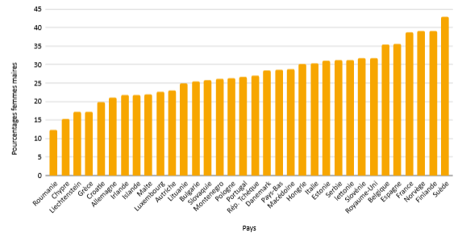

V. Les femmes ayant de hautes responsabilités
A. Les femmes maires
Ainsi, après avoir vu que certaines femmes avaient réussi accéder à de hauts postes à responsabilités dans la sphère politique en devenant présidentes, premières ministres ou encore parlementaires, aussi bien dans les pays du Nord que du Sud. Nous allons nous intéresser aux femmes qui occupent un poste avec des responsabilités politique à l’échelle locale, les maires.
Pour pouvoir réaliser une comparaison entre les pays du Nord et les pays du Sud, nous avons sélectionné deux régions, Europe et l’Amérique Latine. Notre étude va porter sur ces deux régions et non pas sur l’ensemble des pays du monde, car les données sur les autres régions du monde, celles non sélectionnées sont indisponibles. Ainsi nous prendrons l’Europe pour représenter les pays du Nord et l’Amérique Latine afin de représenter les pays du Sud.
Nous allons commencer par l’Amérique latine. Pour cela nous allons observer le graphique présent ci-dessous.
Graphique n°2 : Évolution du pourcentage de femmes maires en Amérique Latine
Ainsi entre 1998 et 2018, il y a eu une forte augmentation de femmes devenues maires. En 20 ans, le nombre de Sud américaines maires à triplé, passant de 5.2% en 1998 à 15.5% en 2020. À noter qu’entre 1998 et 2018 il y a eu une constante évolution, il n’y pas eu de stagnation ni même de diminution. On constate également à partir de 2009 il y a même une accélération. Maintenant que nous nous somme intéressé à l’Amérique Latine en général nous allons voir plus en détaille par pays.
Graphique n°3 : Pourcentage de femmes maires par pays en Amérique Latine en 2017

En 2017, deux pays se démarquent en Amérique Latine par leur pourcentage élevé de femmes maires c’est Cuba et le Nicaragua, dans ces pays c’est près de 40% des femmes qui sont élues maires. Néanmoins, il y a de fortes disparités au sein de cette région du monde, on remarque le contraste entre les deux pays cités précédemment et la Jamaïque où en 2017 le poste de maire était exclusivement occupé par des hommes, aucune femme occupé cette fonction. Également 8 pays si on exclut la Jamaïque ont moins de 10% de femmes maires. Ainsi on voit bien le contraste au sein même de cette région où l’on retrouve des pays où il y a très peu voire pas du tout de femmes tandis que dans d’autres pays les femmes étant maires sont relativement bien représentées.
Nous allons maintenant nous intéresser à notre seconde zone d’étude, l’Europe. Pour cela nous allons nous appuyer sur le graphique présenté ci-dessous. Entre 2011 et 2019 en Europe il y a plus de 30% des communes qui ont pour Maires une femme. Il y un faible évolution entre ces deux périodes contrairement aux pays d’Amérique Latine où l’évolution était bien plus marqué bien que les femmes était moins présente à ce poste.
Graphique n°4 : Évolution du pourcentage de femmes maires en Europe

Nous allons maintenant, voir si comme en Amérique Latine il y a de fortes disparitées au sein même de cette région ou si au contraire les femmes sont bien représenté dans chacun des pays.
Graphique n°5 : Pourcentages de femmes maires par pays en Europe en 2017
Il y a également des disparitées, les pays nordique (Finlande, Norvège, Suède) et l’Espagne, la Belgique et la France sont les six pays où il y a plus de 35% des femmes maires, la suède à la première place avec 43% de femmes élues maires. Néanmoins en Roumanie les femmes sont peu nombreuses au poste de maires puisqu’elles sont seulement 12,4%. Dans les pays de l’Est les femmes sont moins bien représenté à ce poste. Néanmoins, même si certains pays on du retard l’Europe cherche à développer d’avantage l’égalité entre les hommes et les femmes, avec entre autre l’institut européen pour l’égalité entre les hommes et les femmes.
Voici un graphique illustrant la situation des femmes maires dans le monde en 2017. L’europe est largement en avance par rapport à l’Amérique Latine bien que c’est dans cette région que l’on observe la plus forte évolution.
Graphique n°6 : Comparaison femmes maires en Europe et en Amérique Latine

B. Les femmes juges
Ainsi après avoir étudier la place des femmes dans la sphère locale (maires), nous allons comparer les femmes juges dans les pays du Nord et les pays latinos et hispanos. Un juge est un magistrat chargé de la justice. Nous avons réalisés les deux graphiques ci-dessous afin de pouvoir comparer ces deux régions du monde.
Nous supposons que les femmes juges sont plus présentes dans les pays du Nord que dans les pays du Sud. Grâce au premier graphique qui représente l’évolution de la proportion des femmes juges dans les pays du Nord, on remarque qu’en 2005, 46.8% des juges sont des femmes dans les pays du Nord. On constate dans un premier temps qu’il n’existe pas de parité dans les juges dans les pays du Nord. Malgré leur niveau de développement élevé, on constate pas une parité chez les juges.
Graphique n°7 : Évolution de la proportion de femmes juges dans les pays du Nord
En 2005, pour les pays du Sud, on constate que seulement 18% des juges sont des femmes, ce qui est loin de la parité entre les hommes et les femmes dans le monde juridique.
Graphique n°8 : Évolution de la proportion de femmes juges dans les pays latinos hispanos
Cependant, si on regarde l’évolution entre 2005 et 2017, il y a une évolution beaucoup plus importante dans les pays du Sud que dans les pays du Nord. En 2017, 35% des juges des pays du Sud sont des femmes alors que seulement 17% en 2005. Il y a une augmentation de 18 points de pourcentage en 12 ans. Alors que pour les pays du Nord,en 2017, 52% des juges sont des femmes. Entre 2005 et 2017, on constate une augmentation de 5.2 points de pourcentage dans les pays du Nord.
Les pays du Nord ont donc une parité pour les femmes juges cependant on peut voir qu’il n’y a pas eu beaucoup d’évolution. Malgré une parité dans les pays du Nord, les juges femmes sont critiqués sur les décisions. Elles sont accusées de favoritisme judiciaire, elles travaillent est remis en cause par des hommes. Certaines juges hommes dénoncent le fait dans des pays du Nord, que les femmes juges sont sévères dans les décisions dans des affaires de violence conjugale ou d’agressions sexuelles.
On peut donc conclure qu’il y a moins de femmes juges dans les pays du Sud que dans les pays du Nord.Ainsi au fur et à mesure des années, il y a une parité entre les femmes et les hommes au sein des juges cependant il y a une inégalité au sein du travail fait par les femmes juges. Leurs décisions sont remis en cause car elles auraient ce coté affectif, plus sensible aux affaires qui sont en rapport aux femmes ou les adolescents.
Conclusion
À travers ce dossier nous avons vu l’évolution de la place de la femme dans la société d’aujourd’hui. Nous avons pris comme point de départ le droit de vote, un droit fondamentale pour être reconnu comme citoyen(ne). On a fait un premier constat c’est que les femmes ont pris une place plus importante dans notre société à partir du moment où elles ont été considéré comme citoyenne donc suite à l’obtention de leur droit de vote. Ainsi nous avons poursuivi notre étude en ayant une vision européano centrée autrement dit les pays du Nord étaient plus en avance que les pays du Sud étant des pays en voie de développement. Et on s’est rendu compte que dans bien des cas que cette hypothèse n’était pas validée. Contrairement à ce que l’on pouvait penser les femmes des pays du Sud, notamment en Afrique après l’indépendance des États qui étaient sous dominance européenne, les femmes ont obtenu le droit de vote sans devoir créer des mouvements telle que les Suffragettes, ce droit étant considéré comme indispensable à attribuer aussi bien aux hommes qu’aux femmes.
Les femmes sont même mieux représenté dans les parlements des pays du Sud (plus de femmes présidentes et plus de femmes parlementaires). Ensuite, nous avons les femmes occupant des poste politique à l’échelle locale, bien que les Sud américaines sont moins présentes au poste de maires que les européennes c’est bien en Amérique latine que l’on observe la plus importante progression des femmes maires durant ces dernières années.
Contrairement à ce que l’on pouvait imaginer les pays du Sud bien qu’ils soient en voie de développement, accorde une place de plus en plus importante au femme, bien que la parité entre les hommes et les femmes ne soit pas pour demain. Mais ce constat est valable pour les pays développés. De nombreuses lois sont mises en place afin d’imposer la parité aux moments des élections notamment car les femmes restent sous représentées. De plus, les femmes ont du mal à être élues car elles sont jugées par les électeurs pas «capable» pour prendre des décisions. On a constaté que ces idées évolues avec les années mais cela reste complexe, il y a encore du chemin pour arriver une « vraie » parité.